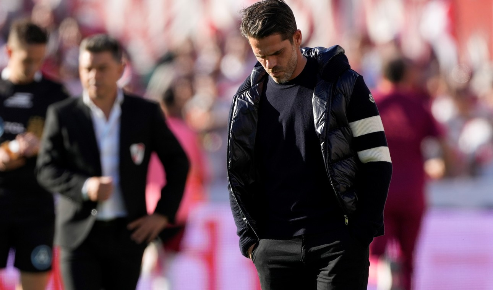

Boca gana con autoridad por Copa Argentina
Boca se impuso con jerarquía y clara superioridad ante Argentino de Monte Maíz...

Boca se impuso con jerarquía y clara superioridad ante Argentino de Monte Maíz...
Tras sus respectivas primeras impresiones, este jueves dos de los nuevos refuerzos se sentaron ante los micrófonos de Boca Predio...
Primeramente, el chileno tomó la palabra y dejó sus sensaciones...

Después de la dura derrota del domingo ante River Fernando Gago fue despedido de su cargo..
